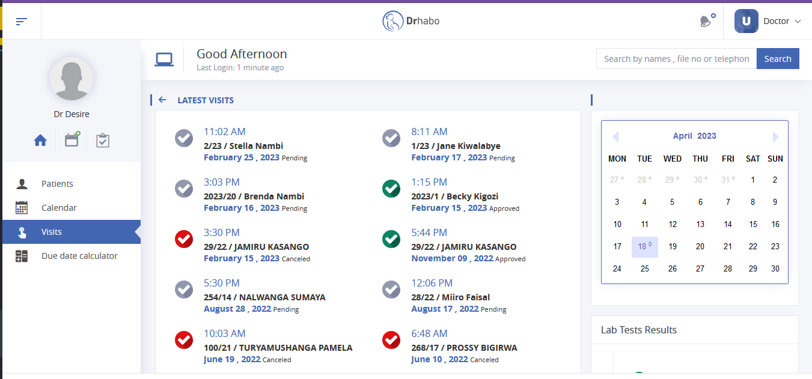
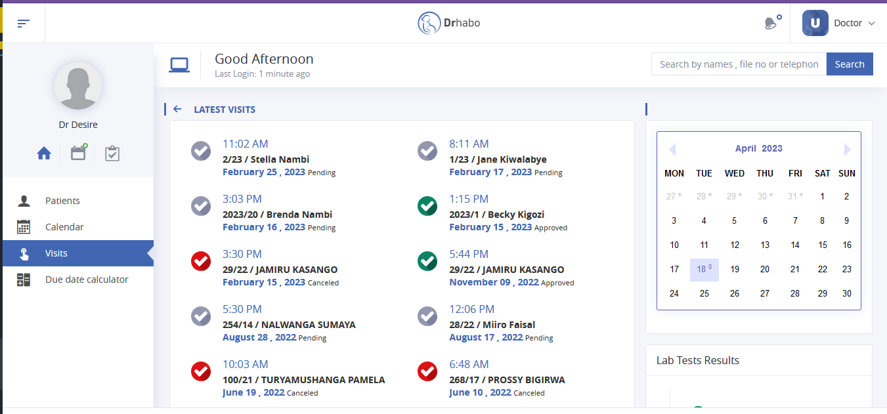

Built a Hospital management system for Gynecologist
As a software developer, I worked on a hospital management system for a gynecologist that aimed to streamline the patient check-in to checkout process. The system was built using modern web development technologies such as HTML, CSS, JavaScript, PHP, Github and MySQL.
Some of the key features of the system included a patient registration portal, appointment scheduling, electronic medical records, billing and payment management, and reporting. The system also allowed for real-time communication between doctors and nurses, as well as automatic alerts for patients with upcoming appointments.
Throughout the development process, I worked closely with the Hospital staff to ensure that the system met their specific needs and requirements. I also provided thorough documentation to ensure that the system could be easily maintained and updated in the future.
- It helped improve patient care by streamlining administrative tasks and providing easy access to patient information.
- It helped healthcare professionals make more informed decisions based on real-time data, leading to better patient outcomes.
Tech stack


 
